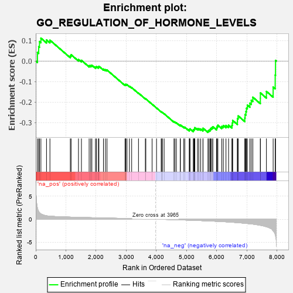
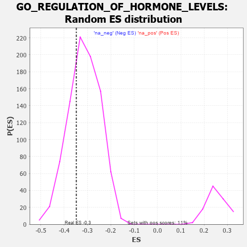

| | | Dataset | 7d |
| Phenotype | NoPhenotypeAvailable |
| Upregulated in class | na_neg |
| GeneSet | GO_REGULATION_OF_HORMONE_LEVELS |
| Enrichment Score (ES) | -0.34810972 |
| Normalized Enrichment Score (NES) | -1.1066267 |
| Nominal p-value | 0.30674157 |
| FDR q-value | 0.73849064 |
| FWER p-Value | 1.0 |
Table: GSEA Results Summary

Fig 1: Enrichment plot: GO_REGULATION_OF_HORMONE_LEVELS
Profile of the Running ES Score & Positions of GeneSet Members on the Rank Ordered List
| PROBE | GENE SYMBOL | GENE_TITLE | RANK IN GENE LIST | RANK METRIC SCORE | RUNNING ES | CORE ENRICHMENT | | 1 | MC4R | | | 57 | 2.491 | 0.0421 | No |
| 2 | IRS1 | | | 98 | 1.659 | 0.0699 | No |
| 3 | ADCY8 | | | 124 | 1.418 | 0.0949 | No |
| 4 | DGAT1 | | | 171 | 1.146 | 0.1118 | No |
| 5 | ARNT | | | 357 | 0.741 | 0.1030 | No |
| 6 | LRP1 | | | 470 | 0.648 | 0.1016 | No |
| 7 | SNX19 | | | 1146 | 0.454 | 0.0250 | No |
| 8 | RFX3 | | | 1171 | 0.451 | 0.0309 | No |
| 9 | P2RY1 | | | 1416 | 0.407 | 0.0080 | No |
| 10 | INHBB | | | 1514 | 0.388 | 0.0034 | No |
| 11 | LRP5 | | | 1769 | 0.342 | -0.0220 | No |
| 12 | SGPL1 | | | 1820 | 0.334 | -0.0217 | No |
| 13 | SMAD4 | | | 1860 | 0.326 | -0.0202 | No |
| 14 | BRSK2 | | | 1979 | 0.308 | -0.0291 | No |
| 15 | RAF1 | | | 2011 | 0.303 | -0.0270 | No |
| 16 | KCNC2 | | | 2075 | 0.295 | -0.0292 | No |
| 17 | FOXD1 | | | 2093 | 0.292 | -0.0256 | No |
| 18 | CREB1 | | | 2243 | 0.269 | -0.0391 | No |
| 19 | REST | | | 2308 | 0.259 | -0.0421 | No |
| 20 | SIN3A | | | 2361 | 0.251 | -0.0437 | No |
| 21 | BTK | | | 2958 | 0.156 | -0.1162 | No |
| 22 | ANO1 | | | 2982 | 0.152 | -0.1161 | No |
| 23 | PCSK5 | | | 2983 | 0.152 | -0.1131 | No |
| 24 | WNT4 | | | 3023 | 0.146 | -0.1152 | No |
| 25 | AIMP1 | | | 3105 | 0.136 | -0.1227 | No |
| 26 | PSMD9 | | | 3179 | 0.125 | -0.1295 | No |
| 27 | MED1 | | | 3405 | 0.089 | -0.1563 | No |
| 28 | ACSL4 | | | 3632 | 0.055 | -0.1839 | No |
| 29 | CCKAR | | | 3648 | 0.051 | -0.1848 | No |
| 30 | DGKQ | | | 3856 | 0.020 | -0.2106 | No |
| 31 | GCNT4 | | | 4003 | -0.009 | -0.2290 | No |
| 32 | HNF4A | | | 4157 | -0.034 | -0.2477 | No |
| 33 | PDX1 | | | 4179 | -0.038 | -0.2496 | No |
| 34 | ENY2 | | | 4195 | -0.041 | -0.2507 | No |
| 35 | ARL2 | | | 4254 | -0.050 | -0.2571 | No |
| 36 | CMA1 | | | 4580 | -0.114 | -0.2960 | No |
| 37 | GATA3 | | | 4614 | -0.120 | -0.2978 | No |
| 38 | ITPR1 | | | 4661 | -0.130 | -0.3011 | No |
| 39 | MYO5A | | | 4787 | -0.155 | -0.3139 | No |
| 40 | PCLO | | | 4793 | -0.156 | -0.3114 | No |
| 41 | VAMP8 | | | 4905 | -0.179 | -0.3219 | No |
| 42 | FZD4 | | | 4940 | -0.186 | -0.3226 | No |
| 43 | DRD2 | | | 5088 | -0.221 | -0.3368 | No |
| 44 | ITSN1 | | | 5094 | -0.222 | -0.3331 | No |
| 45 | DOC2B | | | 5113 | -0.229 | -0.3308 | No |
| 46 | CLCN2 | | | 5224 | -0.250 | -0.3398 | No |
| 47 | TMF1 | | | 5225 | -0.251 | -0.3348 | No |
| 48 | IDE | | | 5252 | -0.258 | -0.3330 | No |
| 49 | PICK1 | | | 5265 | -0.263 | -0.3293 | No |
| 50 | RIMS2 | | | 5272 | -0.265 | -0.3248 | No |
| 51 | ITPR3 | | | 5361 | -0.288 | -0.3303 | No |
| 52 | SOX8 | | | 5404 | -0.296 | -0.3297 | No |
| 53 | CPT1A | | | 5467 | -0.311 | -0.3314 | No |
| 54 | SIDT2 | | | 5542 | -0.331 | -0.3343 | No |
| 55 | FGFR1 | | | 5543 | -0.332 | -0.3277 | No |
| 56 | PRLHR | | | 5705 | -0.377 | -0.3406 | Yes |
| 57 | ENSA | | | 5739 | -0.388 | -0.3371 | Yes |
| 58 | VAMP7 | | | 5777 | -0.399 | -0.3339 | Yes |
| 59 | RDH13 | | | 5797 | -0.405 | -0.3283 | Yes |
| 60 | SNX4 | | | 5834 | -0.415 | -0.3247 | Yes |
| 61 | CDK16 | | | 5869 | -0.425 | -0.3205 | Yes |
| 62 | SYT9 | | | 5992 | -0.469 | -0.3267 | Yes |
| 63 | PTPRN | | | 6007 | -0.474 | -0.3191 | Yes |
| 64 | RAC1 | | | 6036 | -0.484 | -0.3131 | Yes |
| 65 | EGR1 | | | 6165 | -0.527 | -0.3189 | Yes |
| 66 | SMAD2 | | | 6216 | -0.541 | -0.3145 | Yes |
| 67 | SYTL4 | | | 6304 | -0.578 | -0.3141 | Yes |
| 68 | TRPM4 | | | 6390 | -0.612 | -0.3127 | Yes |
| 69 | DPP4 | | | 6501 | -0.663 | -0.3135 | Yes |
| 70 | TRPV4 | | | 6515 | -0.668 | -0.3019 | Yes |
| 71 | ACE | | | 6526 | -0.674 | -0.2898 | Yes |
| 72 | MPC2 | | | 6683 | -0.753 | -0.2947 | Yes |
| 73 | CPLX1 | | | 6684 | -0.753 | -0.2798 | Yes |
| 74 | EGFR | | | 6708 | -0.765 | -0.2675 | Yes |
| 75 | DISP1 | | | 6928 | -0.887 | -0.2777 | Yes |
| 76 | GHSR | | | 6937 | -0.894 | -0.2610 | Yes |
| 77 | PIM3 | | | 6964 | -0.914 | -0.2462 | Yes |
| 78 | PLB1 | | | 6983 | -0.925 | -0.2301 | Yes |
| 79 | ECE2 | | | 7012 | -0.945 | -0.2149 | Yes |
| 80 | RAB1A | | | 7096 | -0.993 | -0.2058 | Yes |
| 81 | CFTR | | | 7143 | -1.030 | -0.1912 | Yes |
| 82 | TSPO | | | 7194 | -1.065 | -0.1764 | Yes |
| 83 | MYRIP | | | 7443 | -1.323 | -0.1817 | Yes |
| 84 | KCNB1 | | | 7444 | -1.327 | -0.1554 | Yes |
| 85 | MCU | | | 7644 | -1.637 | -0.1482 | Yes |
| 86 | ECE1 | | | 7867 | -2.498 | -0.1268 | Yes |
| 87 | ARRB1 | | | 7935 | -3.377 | -0.0684 | Yes |
| 88 | PASK | | | 7946 | -3.674 | 0.0032 | Yes |
Table: GSEA details [plain text format]

Fig 2: GO_REGULATION_OF_HORMONE_LEVELS: Random ES distribution
Gene set null distribution of ES for GO_REGULATION_OF_HORMONE_LEVELS